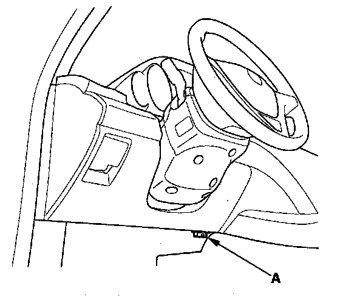
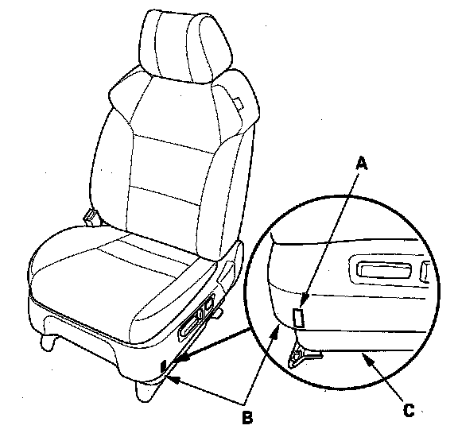

Component Tests and General Diagnostics
Driver's Seat Position Sensor Operation CheckCheck the driver's seat position after any of these actions.
- Driver's seat position sensor replacement
- Cover plate (front side of driver's seat slide rail) replacement
1. Make sure the driver's seat is at its full forward position.
2. Make sure the ignition switch is OFF (0).

3. Connect the HDS to the DLC (A).
4. Turn the ignition switch ON (II).
5. From the HDS Main Menu, select SRS, then Parameter Information, then Buckle Switch, Seat Position Sensor.

6. Using a piece of tape (A), mark the location on the seat's outer cover (B) where the front riser cover meets the seat riser (C). The driver's seat position sensor should read "NEAR."
7. Move the seat back in small increments (about 0.2 in., 5 mm) until the driver's seat position sensor reads "NOT NEAR." The seat should be approximately 1 in. (25 mm) from the front
NOTE: It takes a few seconds for the HDS to display changes, so wait about 5 seconds between each move.
If the driver's seat position sensor data does not work as described above, check the driver's seat position sensor or the cover plate for damage, and replace parts as needed.
8. Turn the ignition switch OFF, and disconnect the HDS from the DLC.